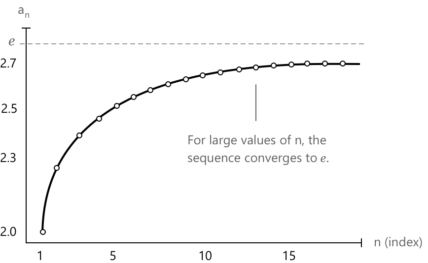

Число Ейлера як границя послідовності
Як послідовність відкриває \(e\)
Число Ейлера, що позначається як \(e\), є однією з найважливіших сталих у математиці. Існує кілька еквівалентних способів його введення: через нескінченні ряди, через натуральну експоненціальну функцію або через границю послідовності. Ця сторінка присвячена останньому підходу.
Розглянемо послідовність \({a_n}\) з \(n \in \mathbb{N}\), визначену наступним виразом: \[ a_n = \left(1 + \frac{1}{n}\right)^n \] Як показано в наступних розділах, ця послідовність є строго зростаючою та обмеженою зверху. Згідно з теоремою про збіжність монотонних послідовностей, вона, отже, збігається до скінченної границі. Ця границя береться як означення числа Ейлера, і ми пишемо: \[ e := \lim_{n \to \infty} \left(1 + \frac{1}{n}\right)^n \] Символ \(:=\) вказує на те, що це означення: число \(e\) вводиться як значення, до якого збігається послідовність. Його десятковий розклад починається як \(e \approx 2.71828\), і можна показати, що \(e\) є ірраціональним і трансцендентним. Ірраціональність означає, що \(e\) не може бути представлене як відношення двох цілих чисел. Трансцендентність є сильнішою властивістю: вона означає, що \(e\) не є коренем жодного ненульового поліноміального рівняння з раціональними коефіцієнтами.
Графік нижче ілюструє, як поводять себе члени послідовності при зростанні \(n\). Значення швидко зростають для малих \(n\), потім зростають повільніше, наближаючись до \(e\) знизу, ніколи його не досягаючи.

Кожен член \(a_n\) строго менший за \(e\), і розрив закривається при зростанні \(n\), хоча швидкість збіжності достатньо повільна, що навіть великі значення \(n\) дають лише грубе наближення границі.
Наступна таблиця значень ілюструє, як поводиться послідовність при збільшенні індексів. \[ \begin{align} n = 1:& \quad a_1 = \left(1 + \frac{1}{1}\right)^1 = 2 \\[6pt] n = 10:& \quad a_{10} = \left(1 + \frac{1}{10}\right)^{10} \approx 2.59374 \\[6pt] n = 100:& \quad a_{100} = \left(1 + \frac{1}{100}\right)^{100} \approx 2.70481 \\[6pt] n = 1000:& \quad a_{1000} = \left(1 + \frac{1}{1000}\right)^{1000} \approx 2.71692 \end{align} \] Члени зростають стабільно і наближаються до \(e \approx 2.71828\) знизу, при цьому кожне наступне значення охоплює більше десяткових знаків границі. Збіжність є монотонною, але повільною: навіть при \(n = 1000\) наближення збігається з \(e\) лише до другого десяткового знака.
Доведення монотонності послідовності
Щоб довести, що послідовність \({a_n}\) є строго зростаючою, ми розкладемо кожен член за допомогою біноміальної теореми. Застосована до виразу \(\left(1 + \frac{1}{n}\right)^n\), розклад дає наступне:
\[ a_n = \sum_{k=0}^{n} \binom{n}{k} \frac{1}{n^k} = \sum_{k=0}^{n} \frac{1}{k!} \cdot \frac{n(n-1)\cdots(n-k+1)}{n^k} \]
Кожен множник вигляду:
\[\frac{n(n-1)\cdots(n-k+1)}{n^k}\]
можна записати як добуток \(k\) членів типу \(\left(1 - \frac{j}{n}\right)\), для \(j = 0, 1, \ldots, k-1\). Таким чином, розклад набуває вигляду:
\[ a_n = \sum_{k=0}^{n} \frac{1}{k!} \prod_{j=0}^{k-1} \left(1 – \frac{j}{n}\right) \]
Тепер розглянемо аналогічний вираз для \(a_{n+1}\), отриманий шляхом заміни \(n\) на \(n+1\) всюди. Відбуваються дві речі: верхня границя суми збільшується на один, додаючи новий додатний член, і кожен існуючий множник \(\left(1 - \frac{j}{n}\right)\) замінюється на \(\left(1 – \frac{j}{n+1}\right)\), який є строго більшим, оскільки віднімана величина зменшується.
Кожен член у сумі для \(a_{n+1}\), отже, є строго більшим за відповідний член у сумі для \(a_n\), і сама сума містить один додатковий додатний член. Звідси випливає, що \(a_{n+1} > a_n\) для всіх \(n \in \mathbb{N}\), отже послідовність є строго зростаючою.
Доведення обмеженості послідовності
Залишається показати, що послідовність є обмеженою. Оскільки \(a_1 = 2\) і послідовність є строго зростаючою, маємо \(a_n > 2\) для всіх \(n \geq 1\). Отже, достатньо встановити верхню межу. Стверджуємо, що \(a_n < 3\) для всіх \(n \in \mathbb{N}\). Виходячи з розкладу, отриманого в попередньому розділі, і зауваживши, що кожен множник \(\left(1 – \frac{j}{n}\right)\) не перевищує \(1\), отримаємо наступну оцінку:
\[ a_n = \sum_{k=0}^{n} \frac{1}{k!} \prod_{j=0}^{k-1} \left(1 – \frac{j}{n}\right) < \sum_{k=0}^{n} \frac{1}{k!} \]
Щоб обмежити цю суму зверху, використаємо нерівність \(k! \geq 2^{k-1}\), яка виконується для всіх \(k \geq 1\) і випливає з того факту, що кожен із \(k-1\) множників у \(2 \cdot 3 \cdots k\) принаймні дорівнює \(2\). Це дає:
\[ \sum_{k=0}^{n} \frac{1}{k!} \leq 1 + \sum_{k=1}^{n} \frac{1}{2^{k-1}} = 1 + \sum_{k=0}^{n-1} \frac{1}{2^k} \]
Сума праворуч є частковою сумою геометричного ряду зі знаменником \(\frac{1}{2}\). Її значення становить:
\[ \sum_{k=0}^{n-1} \frac{1}{2^k} = 2\left(1 - \frac{1}{2^n}\right) < 2 \]
Поєднуючи ці оцінки, ми робимо висновок, що \(a_n < 1 + 2 = 3\) для всіх \(n \in \mathbb{N}\). Разом із нижньою межею \(a_n > 2\), це підтверджує, що послідовність є обмеженою.
Зв'язок із визначенням \(e\) через ряд
Доведення обмеженості розкриває більше, ніж просто верхню оцінку. Величина:
\[\sum_{k=0}^{n} \frac{1}{k!}\]
яка виступає як верхня межа для \(a_n\), сама є частковою сумою ряду:
\[ \sum_{k=0}^{\infty} \frac{1}{k!} = 1 + 1 + \frac{1}{2!} + \frac{1}{3!} + \cdots \]
Цей ряд є збіжним, і його сума точно дорівнює \(e\). Фактично, наступна тотожність показує, що ці два визначення є еквівалентними:
\[ e = \lim_{n \to \infty} \left(1 + \frac{1}{n}\right)^n = \sum_{k=0}^{\infty} \frac{1}{k!} \]
Представлення у вигляді ряду, що виникає з розкладу експоненціальної функції в ряд Тейлора, збігається значно швидше, ніж послідовність \({a_n}\), і забезпечує ефективніший шлях для обчислення десяткових наближень \(e\).
Вибрана література
-
University of Colorado, L. Baggett. Definition of the Number \(e\)
-
University of Connecticut, K. Conrad. Irrationality of \(\pi\) and \(e\)